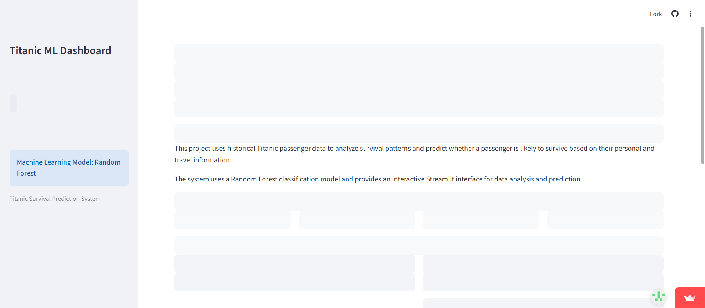
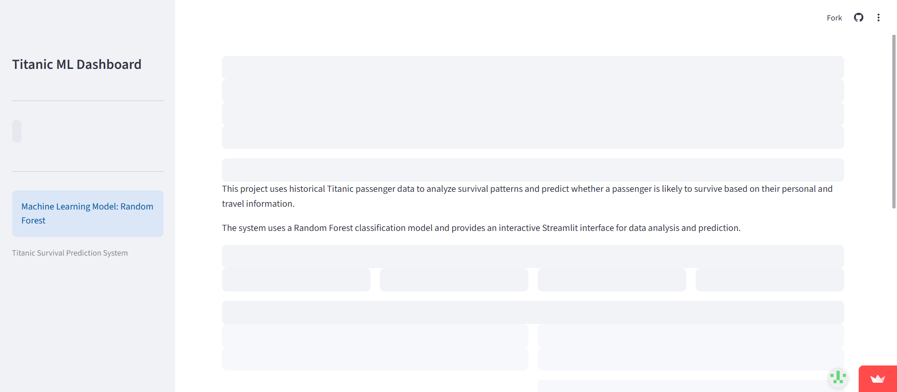
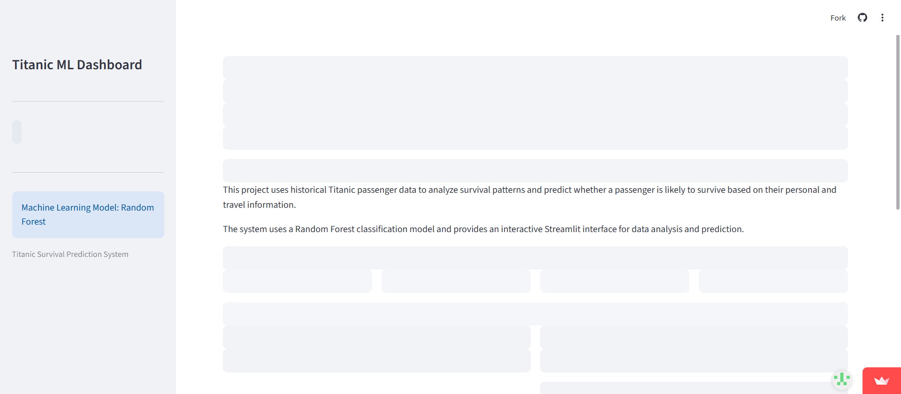
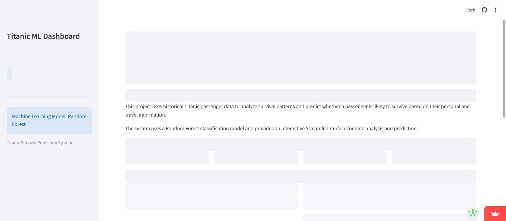
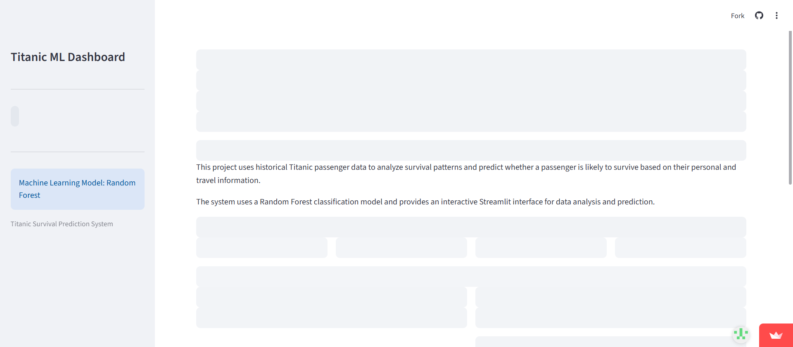
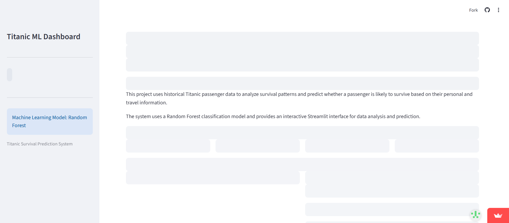

1. Project Information
2. Testing Environment
3. Test Execution Date & Time
4. Test Summary
Total Test Cases
Passed
Failed
Pass Percentage
5. Test Cases
| TC ID | Test Case | Expected Result | Actual Result | Status |
|---|---|---|---|---|
| TC01 | Home Page | Home page should load successfully | Home page loaded successfully | PASS |
| TC02 | Data Analysis Page | Data Analysis page should load | Data Analysis page loaded successfully | PASS |
| TC03 | Survival Prediction Page | Survival Prediction page should load | Survival Prediction page loaded successfully | PASS |
| TC04 | Prediction Form | All prediction form fields should be detected | Current Selenium content check could not verify all expected fields | FAIL |
| TC05 | Model Performance | Model Performance page should load | Model Performance page loaded successfully | PASS |
| TC06 | About Project | About Project page should load | About Project page loaded successfully | PASS |
| TC07 | Input Validation | Input controls should be available | 12 input controls found | PASS |
| TC08 | Predict Button | Predict button should be correctly detected and verified | Predict button was present, but the automated negative verification condition was not satisfied | FAIL |
| TC09 | Page Navigation | All application pages should be navigable | All 5 navigation pages were visited successfully | PASS |
| TC10 | Application Reload | Application should load after refresh | Application loaded successfully after refresh | PASS |
6. PASS / FAIL Status
The Selenium test automation automatically recorded the status of every test case.
PASS Expected condition satisfied.
FAIL Expected condition was not verified.
7. Failed Test Details
TC04 - Prediction Form
Expected: All prediction form fields should be detected
Actual: Current Selenium content check could not verify all expected fields
Status: Under Investigation
TC08 - Predict Button
Expected: Predict button should be correctly detected and verified
Actual: Predict button was present, but the automated negative verification condition was not satisfied
Status: Under Investigation
8. Bug / Defect Information
| Defect ID | Test Case | Description | Type | Status |
|---|---|---|---|---|
| BUG-01 | TC04 | Expected prediction form fields could not be verified by the current Selenium content check. | Functional / Automation Verification | Under Investigation |
| BUG-02 | TC08 | Predict button verification did not satisfy the defined automated verification condition. | Functional / UI Verification | Under Investigation |
9. Regression Testing
Regression testing was performed to verify that important application functionality continued to work after navigation and reload operations.
Regression Areas
- Page Navigation
- Home Page Loading
- Data Analysis Page
- Survival Prediction Page
- Input Controls
- Application Reload
10. Exploratory Testing
Exploratory testing was performed by navigating through different application pages and observing page content, controls and application behavior.
Explored Areas
- Home Page
- Data Analysis
- Survival Prediction
- Model Performance
- About Project
- Input Controls
- Predict Button
- Application Reload
11. Screenshots
Screenshots were automatically captured during Selenium test execution.
TC01 - Home Page
PASS
TC02 - Data Analysis Page
PASS

TC03 - Survival Prediction Page
PASS

TC04 - Prediction Form
FAIL

TC05 - Model Performance
PASS
TC06 - About Project
PASS

TC07 - Input Validation
PASS

TC08 - Predict Button
FAIL
TC09 - Page Navigation
PASS

TC10 - Application Reload
PASS

12. Final Result
Test Execution Completed
Total Test Cases: 10
Passed: 8
Failed: 2
Pass Percentage: 80.00%